Understand the vibe
Read the menu, physical space and audience first. The interface should feel like walking through the front door.
A comparative web-design study translating atmosphere, menu, location and ordering into eight distinct first-screen experiences.
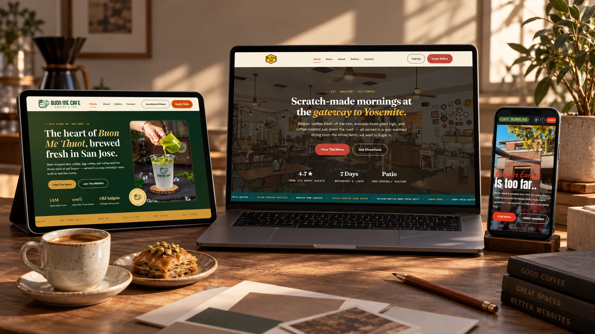
The homepage is the café’s digital threshold: it has seconds to communicate place, personality and the next useful action.
This self-initiated series studies how the same commercial needs can produce radically different interfaces. Each concept begins with the venue’s character, then builds a hierarchy around menu discovery, location, hours and ordering.
The result is not a single template with new colors. It is a collection of eight visual systems shaped around different audiences, histories and hospitality promises.
Read the menu, physical space and audience first. The interface should feel like walking through the front door.
Typography, color, imagery and rhythm are selected to express the venue, not to decorate a generic layout.
Menu, hours, directions and ordering stay visible so brand expression never competes with the customer’s task.
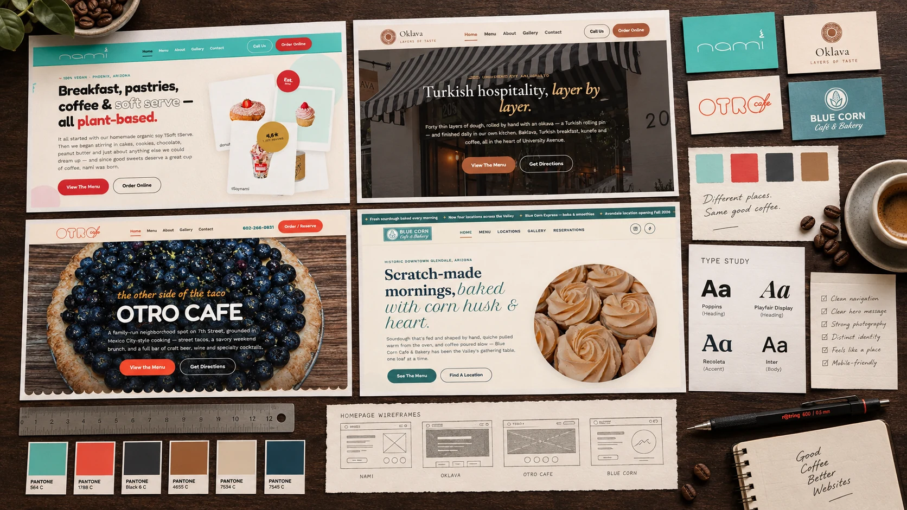
Every original interface is presented inside the same landscape frame. The copy beside it explains the design decision, not just the aesthetic.
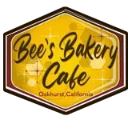
A welcoming gateway bakery translated through soft organic shapes, a comforting palette and a direct path from appetite to action.
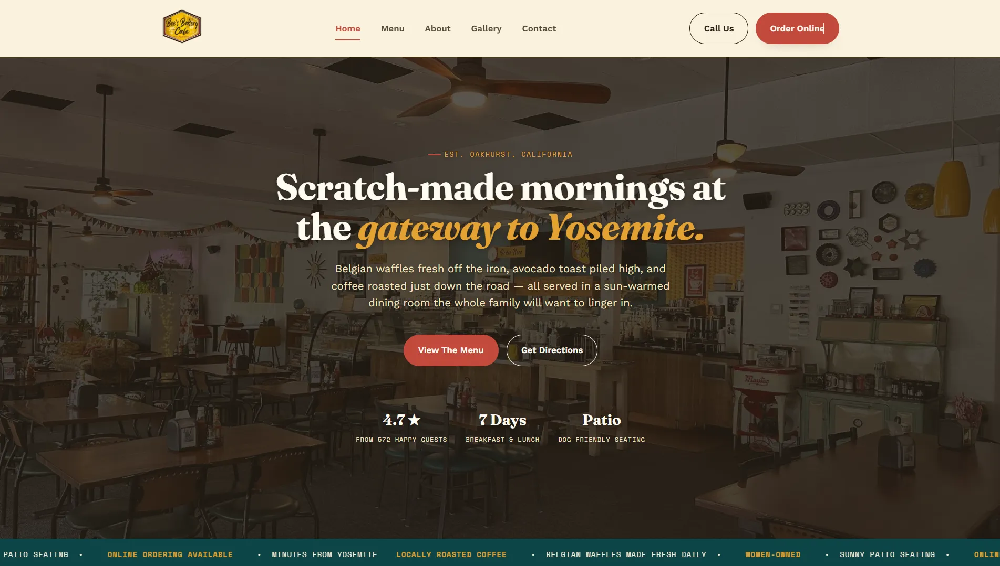
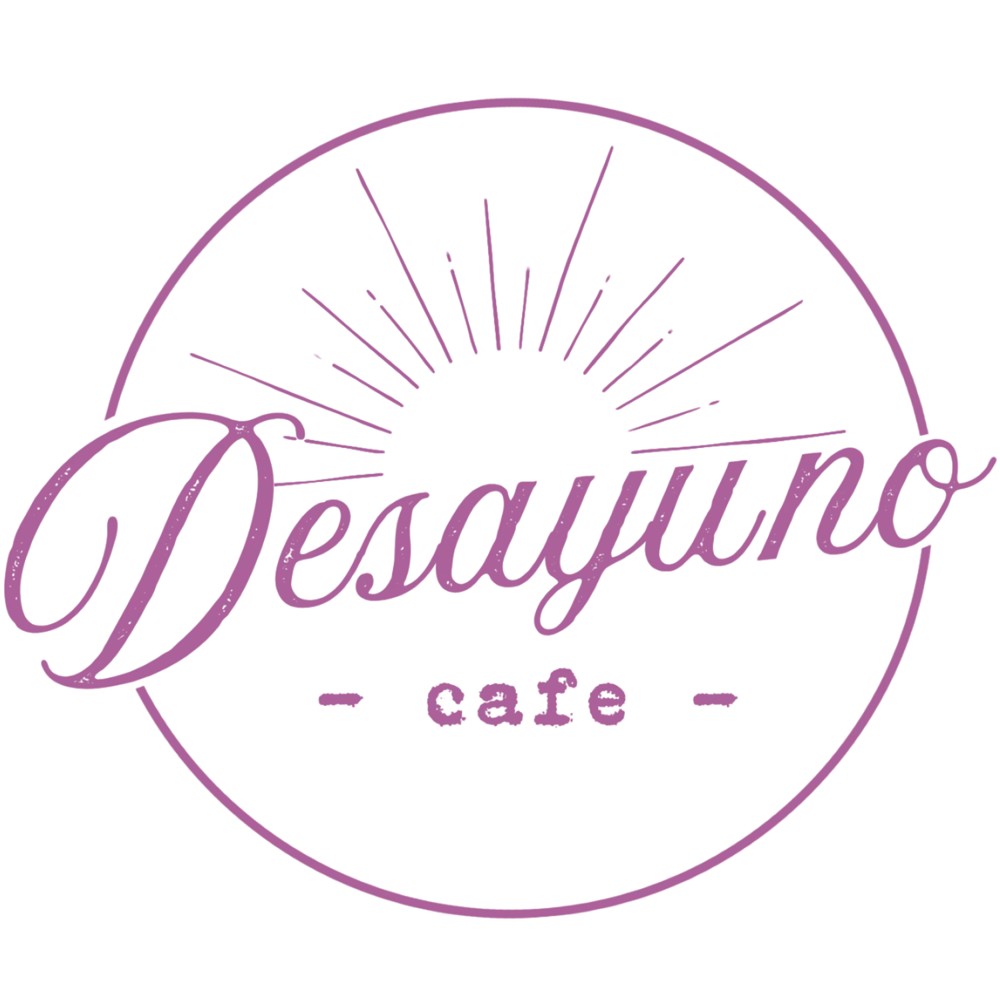
A bright breakfast identity uses generous breathing room, crisp type and sunlit color to make the morning offer immediately understandable.
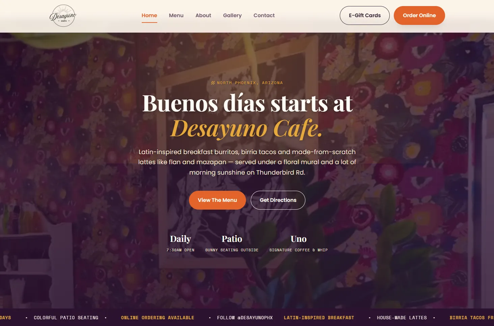
Vietnamese coffee culture becomes a saturated editorial experience, balancing heritage cues with a lively, contemporary service flow.
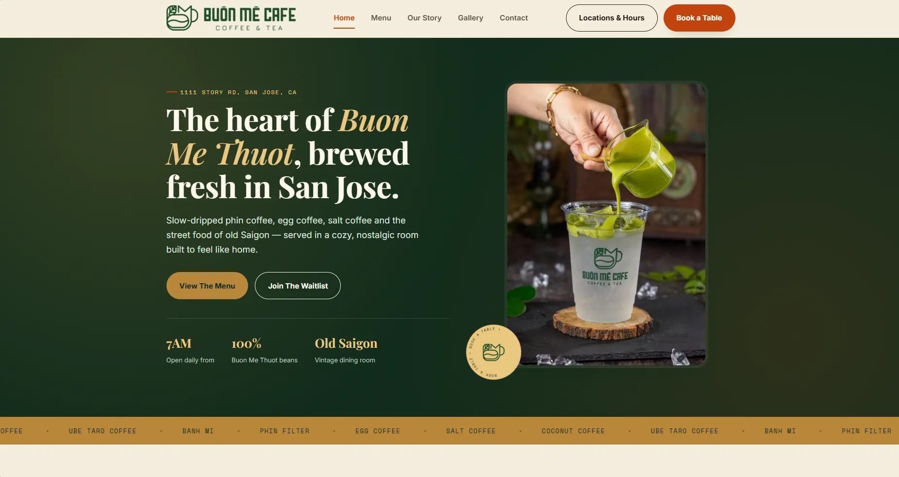
A darker, more ceremonial direction turns Turkish hospitality into an editorial entry point built from rich tones and expressive contrast.
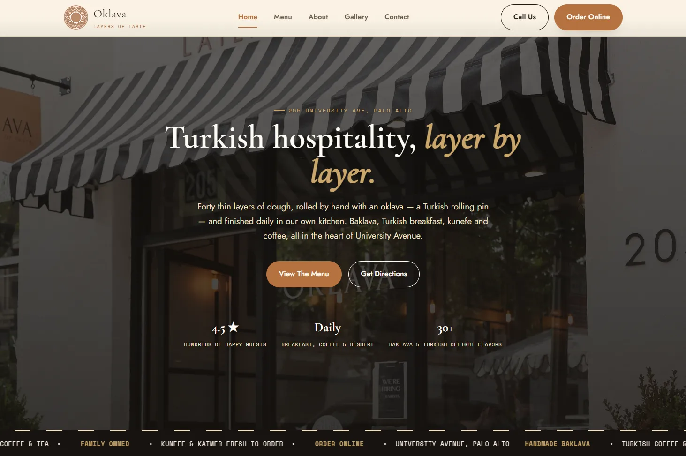
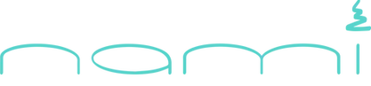
Pastel color, outlined lettering and floating product cards make a broad plant-based offer feel playful without losing the ordering path.
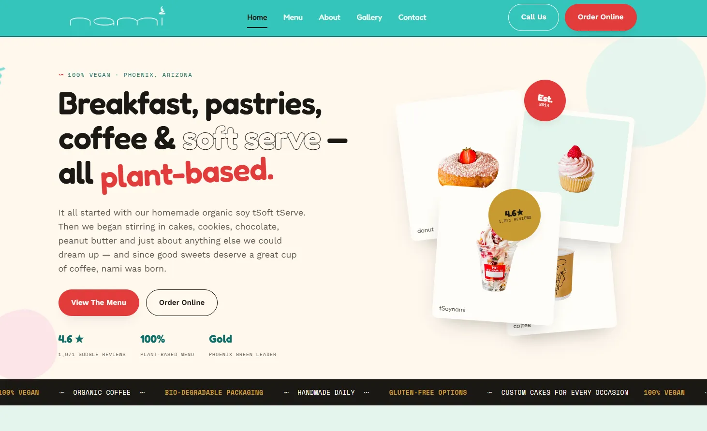
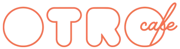
A full-bleed food image does the selling first, while bold type and direct reservation controls keep the experience decisive.
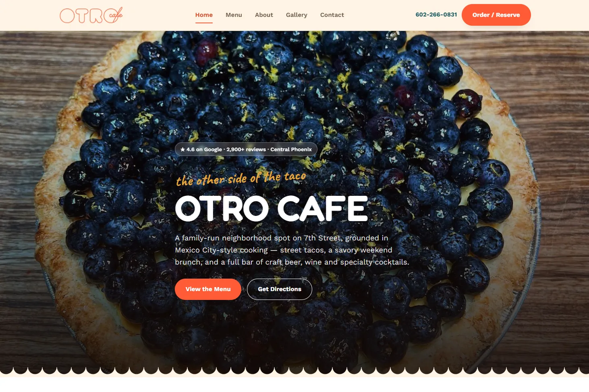
A longstanding neighborhood café receives a clear, location-first homepage that lets its atmosphere and reputation lead.
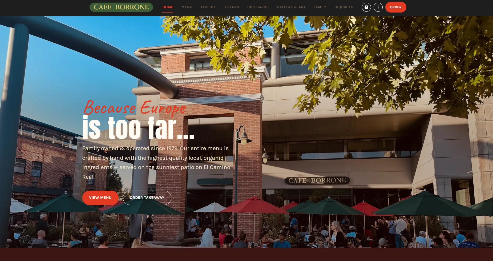
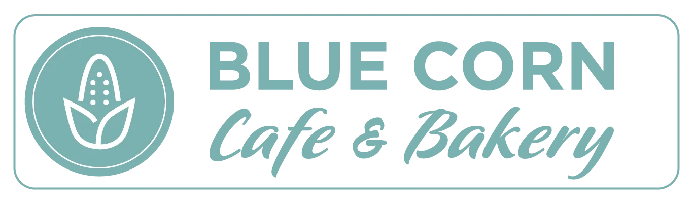
Earthy restraint, expressive type and handmade detail connect an artisanal product story to the role of a local gathering place.

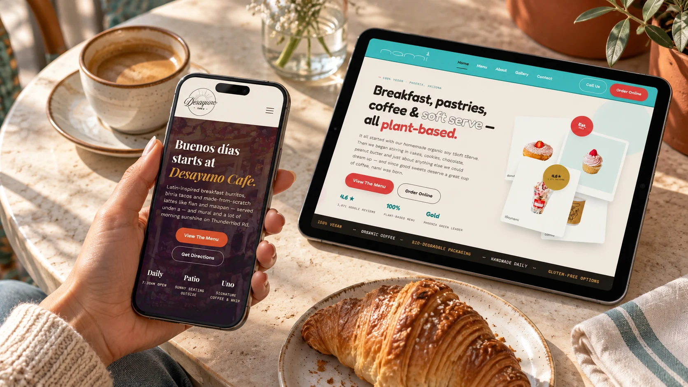
Hospitality websites often meet people in motion: deciding where to go, checking an address, opening a menu or placing an order from a phone.
The series demonstrates range without losing rigor. Each concept changes voice, palette and composition, while the decision-making remains anchored in real customer priorities.